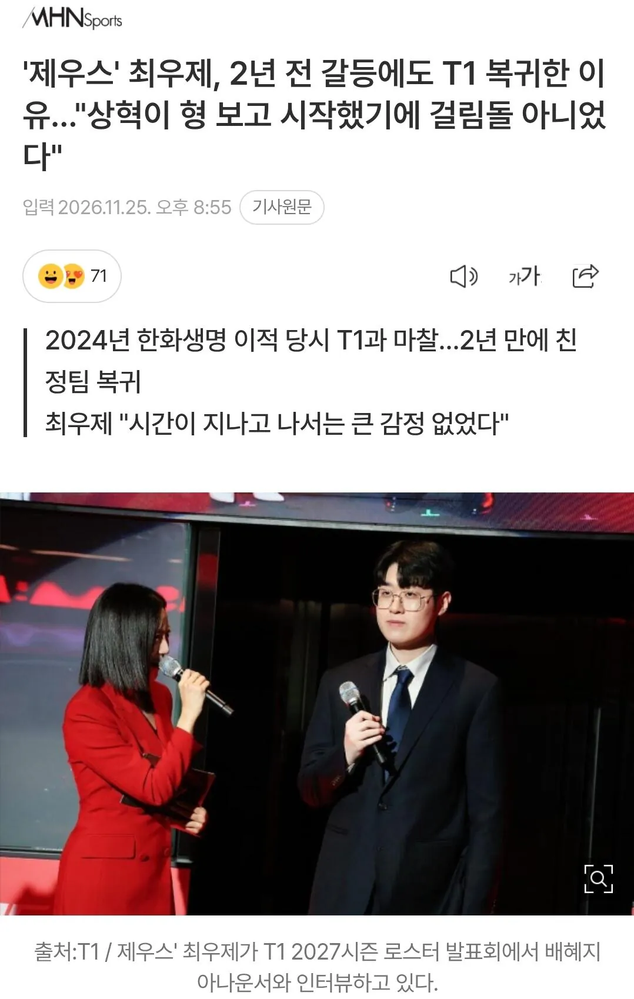
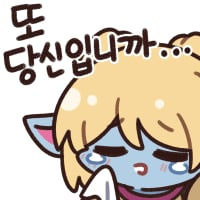

롤) 제우스 T1 복귀이유 : 페이커
댓글
환영한다

근데 조마쉬나 다른 결정권자는 왜 그대로 있는거야? 진작에 잘린줄 알았는데 아니더만. 잘못에 책임을 져야지. 대놓고 거짓말하고 선수 한 명 묻으려고 했던건데
젠장, 대상혁 난 네가 좋다..!
뭣 그렇다면 페이커가 있음에도 나갈 사유라도 있었다는건가!!
그래 우제야 그릇이 크구나
얘가 이제 어른이 됐네
살아남는 방법을 알어 ㅋㅋㅋ
ㅋㅋ 이게 맞따
나갈땐 상혁이형 없다고 나간건 아니잖아
나가보니 절실할순 있겠지
집나가니 참~힘들제
그랜드 무관하려고 티원 간건가?
어쩐지 시원하게 3년 박고 페이커랑 계약기간 똑같이 잡더라니 젠장 또 대상혁이야
상혁이형 그랜드슬램 만들어줘야지
돈가지고 장난질치던놈때문에 고생이많다 우제야
한중 결승4세트 솔직히 다들 미드가 페이커였으면 했잖아